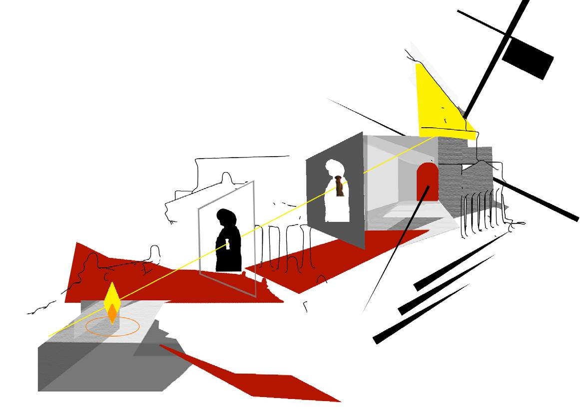
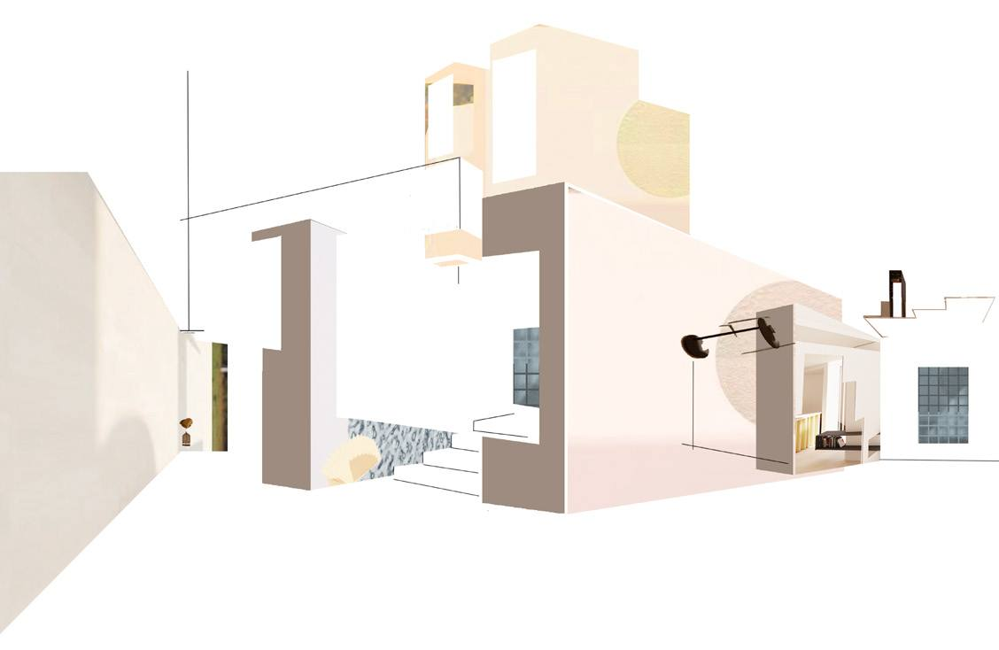
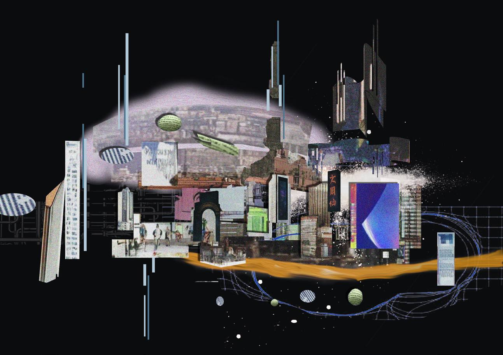
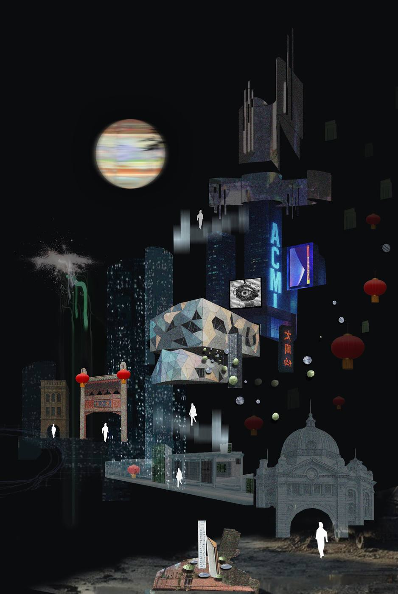
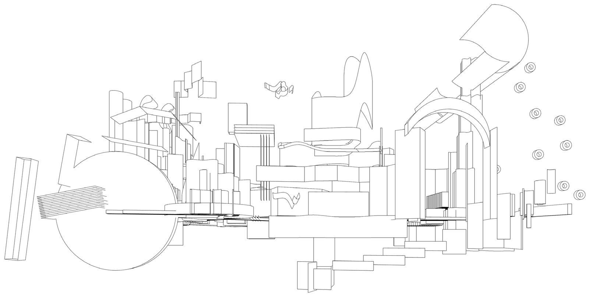
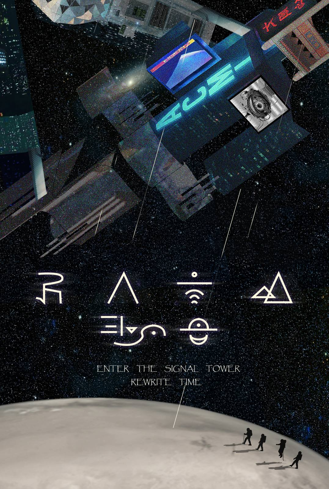
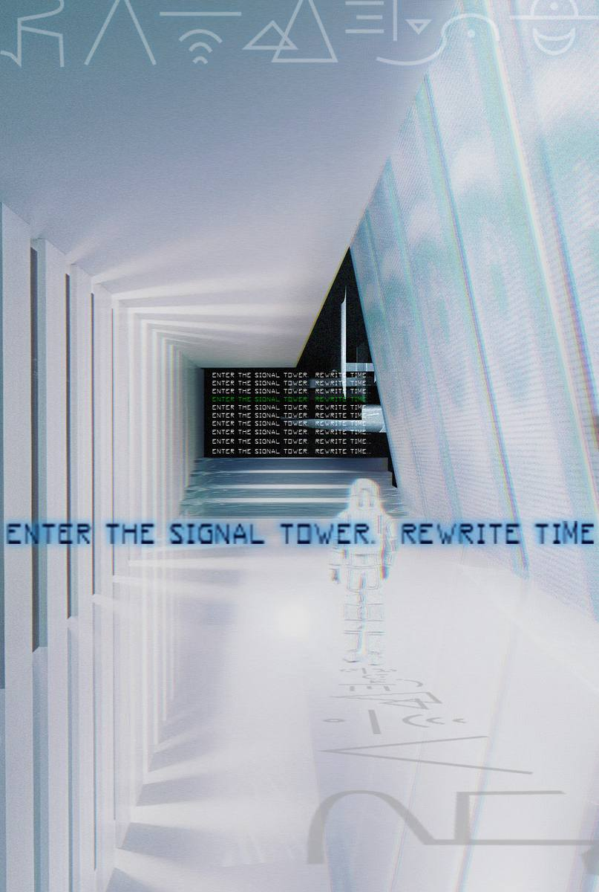

Project 04 — Graphic Collage & Poster
Perception
Between the evolving city landscapes







A city that dreams itself
Based on a line drawing derived from an abstracted floor plan, I re-collaged imagined urban elements and possible city structures — incorporating digital symbols, cloud data, ruins, and skyscrapers. Drawing inspiration from the style of the film Blade Runner 1982, I created my own vision of Melbourne as a future city.
The collages above are the result of my observations on how space transforms from a fixed form into personal perception. These works inspired me to explore how the city evolves into a fluid, evolving city landscape. The final outcome consists of two posters that reconstruct the worldview of Melbourne, inviting people into a future urban space reimagined by me.
Study 01 — Sight
My Sight
A fire altar marks the pioneers' sacrifice — fire as life, fire as memory. Through the gate, soldiers shift from black to white, from body to spirit, guided toward the roof's light. At the end, a flag and cross-shaped triangle hold both peace and conflict in one frame.
Study 02 — Inversion
My Previous Design
A residence born from three originals — Modernist at heart, yet flipped in form. Walls become entrances, thresholds become spaces. Logic inverted, but the feeling remains familiar.
Study 03 — Source
The Line Drawing
Everything begins with one abstracted floor plan — a line drawing stripped from its architectural duty and re-read as a map of possible futures. From this single line, the city grows: digital symbols, cloud data, ruins, skyscrapers.
Study 04 — Landscape
Evolving City Landscapes
The two collages are the results of observing how space transforms from a fixed form into personal perception — the city becomes a fluid, evolving landscape, reimagined through my own worldview.
The Posters
final outcome —
two worldviews
of Melbourne
POSTER 01 — WORLDVIEW A
POSTER 02 — WORLDVIEW B